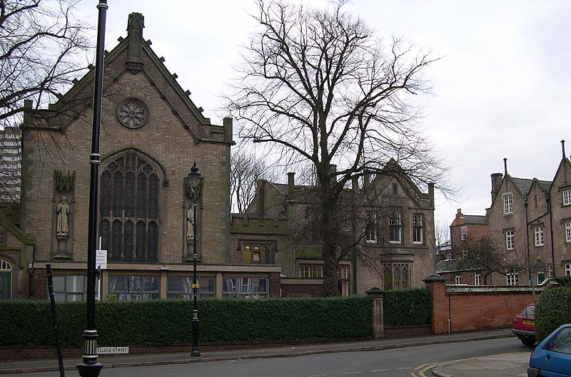

A walk through Bates' and Wallace's Leicester
<< Previous Leicester Scene
Next Leicester Scene >>

Main buildings of the Collegiate School, Leicester
©
James Mallet
2002
Back to
A walk through Bates' and Wallace's Leicester
Back to
Alfred Russel Wallace
Back to
Henry Walter Bates
Back to
Portraits
Back to
Jim Mallet Home Page